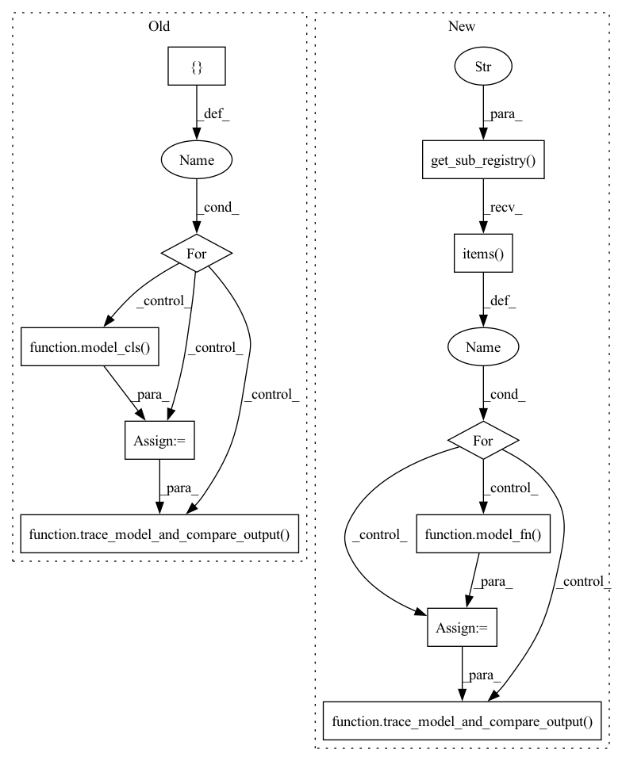

Pattern ID :40312

Before Change
// TODO: remove this skip once we handle the latest gpt model
@pytest.mark.skip
def test_gpt():
MODEL_LIST = [
transformers.GPT2Model,
transformers.GPT2LMHeadModel,
transformers.GPT2DoubleHeadsModel,
transformers.GPT2ForTokenClassification,
// transformers.GPT2ForSequenceClassification, // not supported yet
]
config = transformers.GPT2Config(n_position=64, n_layer=2, n_head=4)
def data_gen():
input_ids = torch.zeros((BATCH_SIZE, SEQ_LENGTH), dtype=torch.int64)
token_type_ids = torch.zeros((BATCH_SIZE, SEQ_LENGTH), dtype=torch.int64)
attention_mask = torch.zeros((BATCH_SIZE, SEQ_LENGTH), dtype=torch.int64)
kwargs = dict(input_ids=input_ids, token_type_ids=token_type_ids, attention_mask=attention_mask)
return kwargs
for model_cls in MODEL_LIST:
model = model_cls(config=config)
trace_model_and_compare_output(model, data_gen)
if __name__ == "__main__":
test_gpt()
After Change
// TODO: remove this skip once we handle the latest gpt model
@pytest.mark.skip
def test_gpt():
sub_registry = model_zoo.get_sub_registry("transformers_gpt")
for name, (model_fn, data_gen_fn, _, _) in sub_registry.items():
model = model_fn()
trace_model_and_compare_output(model, data_gen_fn)
if __name__ == "__main__":
test_gpt()
In pattern: SUPERPATTERN
Frequency: 3
Non-data size: 11
Instances
Fragment ID: 114439250
Project Name: hpcaitech/colossalai
Commit Name: 6d48eb0560159624014dc17b019e6319376b4ed6
Time: 2023-03-14
Author: somerlee.9@gmail.com
File Name: tests/test_fx/test_tracer/test_hf_model/test_hf_gpt.py
M Class Name: AnonimousClass
N Class Name: AnonimousClass
M Method Name: test_gpt(0)
N Method Name: test_gpt(0)
M Parent Class:
N Parent Class:
M File Name: tests/test_fx/test_tracer/test_hf_model/test_hf_gpt.py
N File Name: tests/test_fx/test_tracer/test_hf_model/test_hf_gpt.py
M Start Line: 13
M End Line: 34
N Start Line: 10
N End Line: 16
'>
Before Change
def test_opt():
MODEL_LIST = [
transformers.OPTModel,
transformers.OPTForCausalLM,
]
config = transformers.OPTConfig(hidden_size=128, num_hidden_layers=2, num_attention_heads=4)
def data_gen():
input_ids = torch.zeros((BATCH_SIZE, SEQ_LENGTH), dtype=torch.int64)
attention_mask = torch.zeros((BATCH_SIZE, SEQ_LENGTH), dtype=torch.int64)
kwargs = dict(input_ids=input_ids, attention_mask=attention_mask)
return kwargs
for model_cls in MODEL_LIST:
model = model_cls(config=config)
trace_model_and_compare_output(model, data_gen)
if __name__ == "__main__":
test_opt()
After Change
def test_opt():
sub_registry = model_zoo.get_sub_registry("transformers_opt")
for name, (model_fn, data_gen_fn, _, _) in sub_registry.items():
model = model_fn()
trace_model_and_compare_output(model, data_gen_fn)
if __name__ == "__main__":
test_opt()
'>
Fragment ID: 114439248
Project Name: hpcaitech/colossalai
Commit Name: 6d48eb0560159624014dc17b019e6319376b4ed6
Time: 2023-03-14
Author: somerlee.9@gmail.com
File Name: tests/test_fx/test_tracer/test_hf_model/test_hf_opt.py
M Class Name: AnonimousClass
N Class Name: AnonimousClass
M Method Name: test_opt(0)
N Method Name: test_opt(0)
M Parent Class:
N Parent Class:
M File Name: tests/test_fx/test_tracer/test_hf_model/test_hf_opt.py
N File Name: tests/test_fx/test_tracer/test_hf_model/test_hf_opt.py
M Start Line: 11
M End Line: 28
N Start Line: 7
N End Line: 13
'>
Before Change
def test_t5():
MODEL_LIST = [
transformers.T5Model,
transformers.T5ForConditionalGeneration,
transformers.T5EncoderModel,
]
config = transformers.T5Config(d_model=128, num_layers=2)
def data_gen():
input_ids = torch.zeros((BATCH_SIZE, SEQ_LENGTH), dtype=torch.int64)
decoder_input_ids = torch.zeros((BATCH_SIZE, SEQ_LENGTH), dtype=torch.int64)
kwargs = dict(input_ids=input_ids, decoder_input_ids=decoder_input_ids)
return kwargs
def data_gen_for_encoder_only():
input_ids = torch.zeros((BATCH_SIZE, SEQ_LENGTH), dtype=torch.int64)
kwargs = dict(input_ids=input_ids)
return kwargs
for model_cls in MODEL_LIST:
model = model_cls(config=config)
if isinstance(model, transformers.T5EncoderModel):
data_gen_func = data_gen_for_encoder_only
else:
data_gen_func = data_gen
trace_model_and_compare_output(model, data_gen_func)
if __name__ == "__main__":
test_t5()
After Change
def test_t5():
sub_registry = model_zoo.get_sub_registry("transformers_t5")
for name, (model_fn, data_gen_fn, _, _) in sub_registry.items():
model = model_fn()
trace_model_and_compare_output(model, data_gen_fn)
if __name__ == "__main__":
test_t5()
'>
Fragment ID: 114439249
Project Name: hpcaitech/colossalai
Commit Name: 6d48eb0560159624014dc17b019e6319376b4ed6
Time: 2023-03-14
Author: somerlee.9@gmail.com
File Name: tests/test_fx/test_tracer/test_hf_model/test_hf_t5.py
M Class Name: AnonimousClass
N Class Name: AnonimousClass
M Method Name: test_t5(0)
N Method Name: test_t5(0)
M Parent Class:
N Parent Class:
M File Name: tests/test_fx/test_tracer/test_hf_model/test_hf_t5.py
N File Name: tests/test_fx/test_tracer/test_hf_model/test_hf_t5.py
M Start Line: 11
M End Line: 40
N Start Line: 7
N End Line: 13